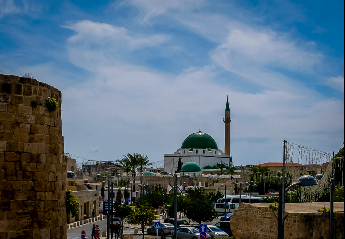

Acre (Akko) is a port city in northwest Israel, on the Mediterranean coast. It’s known for its well-preserved old city walls. In a tunnel in the walls is the Treasures in the Walls Ethnographic Museum, depicting daily life from the Ottoman times to the 20th century. The mosaic-covered Or Torah (Tunisian) Synagogue has 7 torah arks. The 18th-century Al-Jazzar Mosque has marble pillars and underground pools.
Acre – or Akko as it’s known in Hebrew and Arabic – a great little north coast town to check out, complete with ancient Crusader roots and no signs of entering the 21st century… Acre’s rich history has meant a long list of cultures playing an important role, including Israelites, Greeks, Romans, Crusaders and Arabs. Acre is also a holy city in the Bahá’í Faith and can add recognition by UNESCO as a World Heritage Site to its impressive resume. It’s not exactly on the main tourist trail, but there are plenty of awesome things to check out; definite must-sees in Acre include the Old City, with its shabby glamor and funky open-air market, the Hospitaller Fortress where you feel like you’re walking in a time warp C.E. 1230, and the marina, with its fishing port and lighthouse.
Not to be missed is the Hospitaller Fortress. There, you can wander through the enormous stone rooms with vaulted ceilings and perfect acoustics (try singing if you have a good voice!). The spectacular dining hall, dormitories and even ancient latrine are in good shape and worth visiting. In the large open courtyard, you can almost hear knights practicing their swordplay, loaded donkeys being led into the stables, and servants bustling back and forth from the well. The well is there, a keyhole-shaped structure now wisely covered by netting. A thriving caper bush grows inside. The well fills up twice daily, when the rising tide pushes the fresh-water source back upland.
History of Acre
Acre’s rich history has meant a long list of cultures playing an important role, including Israelites, Greeks, Romans, Crusaders, and Arabs. Old Acre is recognised by UNESCO as a World Heritage Site. This historic walled port city was continuously populated since the Phoenician period. Old Acre is unique since it consists of two separate levels - the Crusader city and the Ottoman city. The two levels are separated by hundreds of years in which Acre stayed in ruins, from the Mamelukes conquest in late 13th century until its revival in the Ottoman period (from 16th to early 20th century). Remains from the Crusader City date back to 12th and late 13th century. They have survived virtually intact both above and below today's street level, and paint an extraordinary picture of the Crusader Kingdom of Jerusalem. The present city has emerged from the fortified Ottoman city in the 18th and 19th centuries, with a citadel, mosques, khans and baths.
Al-Jazzar Mosque
Al-Jazzar Mosque is known in Arabic as Jama El-Basha, the Pasha's Mosque. This is Israel's largest mosque outside of Jerusalem and the largest one among the mosques built in Israel during the Turkish period. The mosque was built in 1781 on the ruins of a church that was, in its turn, built on the ruins of a mosque from early Muslim era. The mosque is named after the ruler of Acre who lived at the end of the 18th century. The building dominates Acre's skyline to this very day. The Ottoman Empire ruled the Middle East for four hundred years, from 1517 to 1917, but after a short golden age, the empire gradually declined.